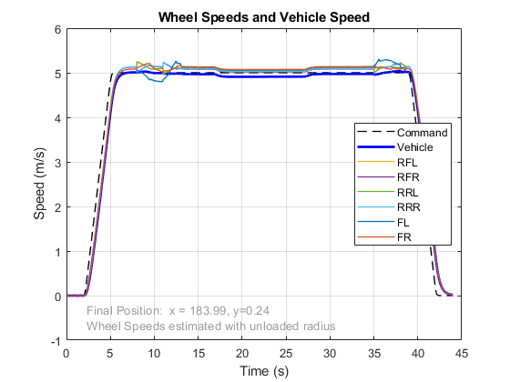
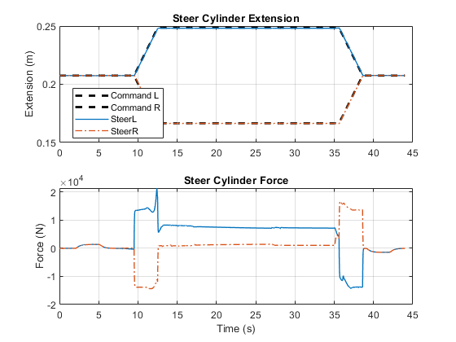
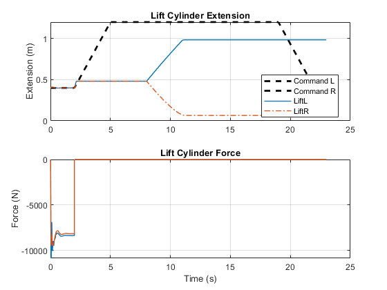

Motor Grader
This example models a motor grader. The motor grader has an articulated chassis, four driven wheels on its rear frame, a fully actuated drawbar and blade, and a front axle with lean and steer cylinders. The actuation system can be driven using prescribed motion to determine the required actuator size. Ideal actuators can be used to begin the process of tuning controllers. The load on the blade from the ground is modeled in an abstract fashion for efficient simulation.
(return to Motor Grader Design with Simscape Overview)
Contents
- Model
- Motor Grader Model
- Vehicle Model
- Frame Model
- Front Frame Model
- Rear Frame Model
- Powertrain: CVT Power Split
- Simulation Results: Grading Test, Grid, Open Loop
- Simulation Results: Grading Test, Bank, Magic Formula, Closed Loop
- Simulation Results, Grading Test, Bank, Point Cloud, Closed Loop
- Simulation Results: Articulation Test
- Simulation Results: Blade Motion Test
- Simulation Results: Drawbar Motion Test
- Simulation Results: Saddle Pin Test
- Simulation Results: Blade Vertical
- Simulation Results: Saddle Pin to Blade Vertical
- Simulation Results: Circle
Model
Motor Grader Model
The motor grader model consists of the actuation system, powertrain, and the vehicle chassis with drawbar and blade. The surface upon which the vehicle drives can be selected as well.
Vehicle Model
The vehicle model contains the articulated chassis with a hinge connecting the rear frame and the main frame which holds the drawbar and blade. Four wheels on the rear frame and two wheels on the front frame ride over the selected surface. The powertrain can be connected to all of the wheels depending upon which model is selected.
Frame Model
The frame is connected to the components that control the positioning of the blade, including the lift assembly, drawbar, and the circle. The actuation system is connected to five actuators that control the position of the blade.

Front Frame Model
The front frame controls the steering and lean angle of the front wheels. The steering actuators point the wheels along the path the front axle should follow. That combined with the articulation angle controls the path of the vehicle. The lean cylinders control the angle the wheels lean towards or away from the frame. This permits the wheels to provide better traction and resist the forces from the load on the blade that will drag the grader off course. Lean also helps the grader stay on the desired path when the grader is driving along a steep slope. The pivot permits the axle to rotate about its longitudinal axis, keeping both wheels on the ground when on uneven terrain.
The R and L ports permit the wheels to connect to the powertrain in the event the design has powered front wheels.
Rear Frame Model
The rear frame models the inertia for the drive unit for the rear wheels, including the power source for the powertrain. The connection between the wheels and the powertrain are the 1D mechanical ports FL, FR, RL, and RR. The mechanical connection between the wheels, including the components such as differentials, is handled within the powertrain subsystem.
Powertrain: CVT Power Split
The model below represents a power split hydromechanical continuously variable transmission (CVT). Parallel hydraulic and mechanical paths ensure that the engine can spin at a near constant speed while the vehicle speed and load from the power take-off shaft varies. Other types of CVTs, including hydromechanical and electrical, can be swapped into this model.
Simulation Results: Grading Test, Grid, Open Loop
In the grading test, nearly every actuation system is tested. The grader drives forward while chassis articulation and front axle steering guide the path of the grader. The front axle wheels lean to counteract the plowing force on the blade. The blade is placed in the proper position by the lift cylinders, circle shift cylinder, circle rotation motor, blade tilt cylinder, and blade side shift cylinder.
Position Actuation
In the first set of plots, prescribed motion is used for all actuation systems. The required force to reach these positions is calculated by the simulation.
Shaft Actuation
The same test is run again, this time applying force and torque at the actuators. This closed-loop actuation with abstract actuators enables us to start the process of tuning the controllers and identifying requirements for bandwidth and sensor accuracy.
Simulation Results: Grading Test, Bank, Magic Formula, Closed Loop
In this test, Magic Formula Tire Model is used to model the tire-ground contact. The grader uses the blade on a bank on the side of the road. Closed-loop control is used to help the grader follow the planned trajectory.
Position Actuation
Prescribed motion is used for all actuation systems. The required force to reach these positions is calculated by the simulation.

Simulation Results, Grading Test, Bank, Point Cloud, Closed Loop
In this test, point cloud is used to model the tire-ground contact. The grader uses the blade on a bank on the side of the road. Closed-loop control is used to help the grader follow the planned trajectory.
Position Actuation
Prescribed motion is used for all actuation systems. The required force to reach these positions is calculated by the simulation.
Simulation Results: Articulation Test
In this test, the articulation cylinder is extended and contracted using prescribed motion. The wheels are permitted to rotate freely.
Position Actuation
Prescribed motion is used for all actuation systems. The required force to reach these positions is calculated by the simulation.
Shaft Actuation
The same test is run again, this time applying force and torque at the actuators. This closed-loop actuation with abstract actuators enables us to start the process of tuning the controllers and identifying requirements for bandwidth and sensor accuracy.
Simulation Results: Blade Motion Test
In this test, the blade tilt and blade side shift actuators are tested using prescribed motion.
Position Actuation
Prescribed motion is used for all actuation systems. The required force to reach these positions is calculated by the simulation.
Shaft Actuation
The same test is run again, this time applying force and torque at the actuators. This closed-loop actuation with abstract actuators enables us to start the process of tuning the controllers and identifying requirements for bandwidth and sensor accuracy.
Simulation Results: Drawbar Motion Test
In this test, the lift cylinders and circle shift actuators are tested using prescribed motion.
Position Actuation
Prescribed motion is used for all actuation systems. The required force to reach these positions is calculated by the simulation.
Shaft Actuation
The same test is run again, this time applying force and torque at the actuators.
Simulation Results: Saddle Pin Test
In this test, the saddle pin is repositioned from the center hole to one of the outer holes. This enables the link bar to reach positions further from the centerline of the frame. This is useful for orienting the blade at higher angles such working high bank slopes or deep ditches.
Position Actuation
Prescribed motion is used for the circle shift cylinder, but force actuation is used for the lift cylinders. The lift cylinders need to "float" to let the circle shift cylinder push the link bar into the new position for the saddle pin.
Simulation Results: Blade Vertical
In this test, the drawbar and moldboard are pushed far from the center of the machine using prescribed motion. In that position, the circle motor rotates the blade through a range of positions. The drawbar is then returned to the center of the machine.
Position Actuation
Prescribed motion is used for all actuation systems. The required force to reach these positions is calculated by the simulation.
Shaft Actuation
The same test is run again, this time applying force and torque at the actuators.
Simulation Results: Saddle Pin to Blade Vertical
In this test, the saddle pin is shifted to a new position and the blade is then moved to a vertical position. This highlights the ability of Simscape Multibody to redefine the kinematic structure of a model during simulation. This is much more efficient than relying on a stiff spring-damper to define nearly rigid connections between parts.
Simulation Results: Circle
In this test, the circle motor is driven with prescribed motion to move the circle through its range of motion.
Position Actuation
Prescribed motion is used for all actuation systems. The required force to reach these positions is calculated by the simulation.
Shaft Actuation
The same test is run again, this time applying force and torque at the actuators.